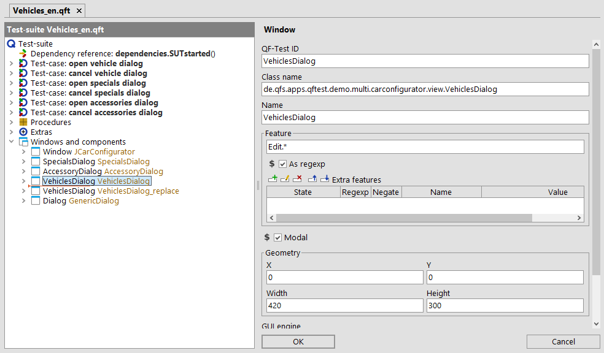

| Version 6.0.3 |
The 'Feature' attribute stores, roughly said, a text that is useful for recognition and is directly connected to the component itself. This can be either the text of the component (for example the label on a button), a programmatically assigned identifier or label of a component (for example CheckBox, RadioButton, TextField), a title ('Window', 'Dialog', 'TitledPanel'), or for a 'Web page' the URL.
Frequently, the value of the 'Feature' is identical to the 'Extra feature' qfs:label.
This is because the label of the component is stored in qfs:label
and this is often the text that is directly connected to the component.
The redundancy still makes sense, since a status can be set for the extra feature:
'Ignore', 'Should match', or 'Must match'.
The 'Feature' implicitly always has the status 'Should match'.
For backwards compatibility reasons it cannot be replaced by qfs:label.
If no Name can be determined, the 'Feature' is used for generating the 'QF-Test component ID'. Examples for this can be found in How to judge robust component recognition.
Components can also be addressed directly in a SmartID (Preview) via the 'Feature' without recording a 'Component' node.
 The Video 'Component
recognition' shows the use of regular expressions with window titles starting from minute
13:07.
The Video 'Component
recognition' shows the use of regular expressions with window titles starting from minute
13:07.
In a lot of applications the developers do not use unique names and QF-Test keeps recording the same components again and again in different places. Playback with previously recorded components may still work, unless the window geometry changes significantly.
In this case it is very likely that the title of the main window changes frequently, for example to display a version string, a user name, a file name or some other variable information. If you want to keep your tests working and prevent recording multiple variants of this window and all its components, you have to select the respective 'Window' node and edit its 'Feature' attribute to replace the dynamic parts of the title with a regular expression. Be sure to check 'Use regexp'. Now your tests should work again.
Here you can see the use of a regular expression for a component of the JCarConfigurator. Its 'Feature' attribute has to start with 'Edit' followed by an optional dynamic part:
|
|  | ||
|
| Figure 5.8: Using a regular expression in the 'Feature' attribute | ||
QF-Test uses regular expressions in many places. You can find detailed information in section 45.3 to learn more about how to use them.
| Last update: 9/6/2022 Copyright © 1999-2022 Quality First Software GmbH |